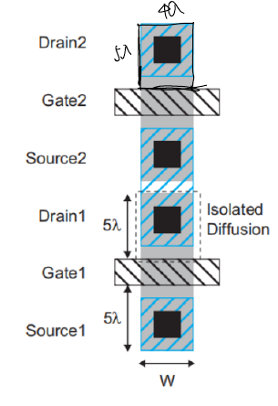

题目来源
考试相关/DIC Review/Chap2 MOS管特性/hw2-answer.pdf · PDF页 10 · 原题号 计算题2 / 问题8
原题按原编号列出；实验题明确整理为读图或笔试问法。重复知识点保留各来源版本，避免漏掉不同参数与条件。
先读：本题所需概念
寄生电容是结构附带、会参与充放电的电容。栅盖住源漏边缘产生覆盖电容；栅与沟道电荷之间产生沟道电容；源漏扩散区与体区的 结产生结电容。 分别连栅与源、漏、体； 连漏、源与体。 是单位面积栅氧电容， 是沟道宽、长；结底板面积记 、边界周长记 ，面积电容参数乘 ，单位长度参数乘相应边界长度。输出与输入反向等幅变化时，跨接两端的电容对一端约等效两倍，这叫米勒效应；若原表已乘二，不可再乘。。
知识出处：PPT/chapter2-device02-dynamic_20260920.pdf，PDF 第 10–24 页。
回看完整解释：6.1 先分清总电容与单位几何参数 · 6.2 栅稍微盖住源漏的部分 · 6.3 栅与沟道或体之间的部分 · 6.4 源漏的PN结部分 · 6.5 电容随电压变化时怎么取一个平均值 · 9.2 为什么某个跨接电容有时按两倍算。题目中的专用参数以题干定义为准；可点带底纹的术语回查首次解释。
题目
一个工艺的单位尺寸带接触孔，其漏扩散区面积为 。衬底接地，分别在漏端为 和漏端为 时，计算漏端扩散寄生电容 。扩散区满足 的设计规则。室温器件参数为：底板单位面积结电容 ；普通侧壁单位周长结电容 ；靠栅侧壁单位周长结电容 ；结梯度系数 、；内建电势 。求 与 。布局参考图中所取漏扩散区宽度为 ，沿源漏方向长度为 ，其中一条宽度边与栅相邻。

查看答案与解析
答案与解析
答案：，。
这里的“扩散寄生电容”是源漏扩散区与体区形成的结电容，包括底板和侧壁两部分。它不同于正向二极管少数载流子存储产生的扩散电容。
先将工艺长度换算为微米：。
| 几何量 | 表达式 | 数值 |
|---|---|---|
| 漏区宽度 | ||
| 漏区长度 | ||
| 底板面积 | ||
| 非栅侧壁周长 | ||
| 靠栅侧壁长度 |
衬底接地，因此反偏幅值 。底板、普通侧壁、靠栅侧壁分别采用各自的单位电容与梯度系数：
零偏时各偏置因子均为：
在 时，：
反偏增强后电容减小，趋势符合结电容规律。不能把整个矩形周长 全部乘普通侧壁系数后再加靠栅边 ，这会重复计数。源页第三个侧壁公式的系数误印为 ，应为 ；源页数值代入正确。